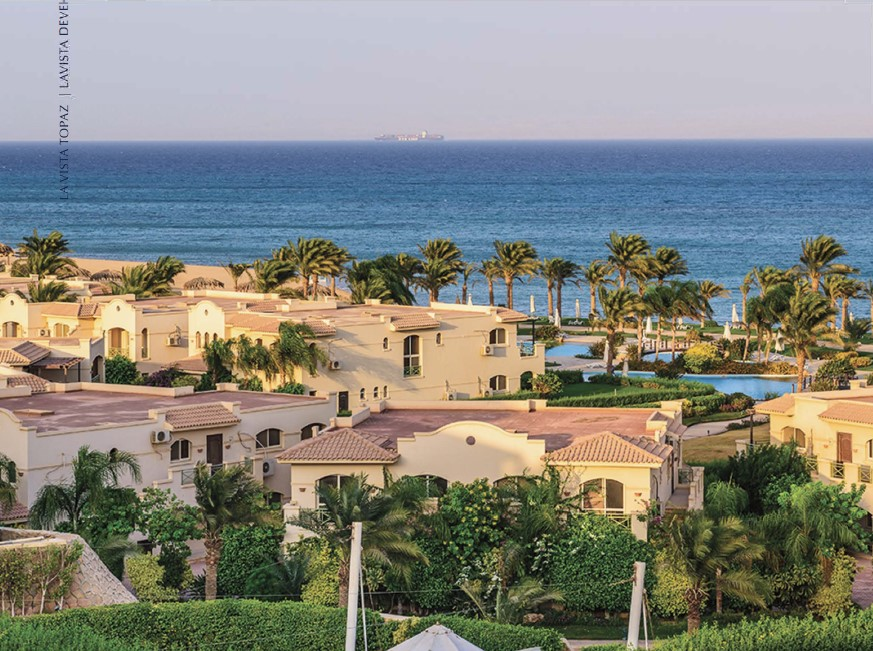
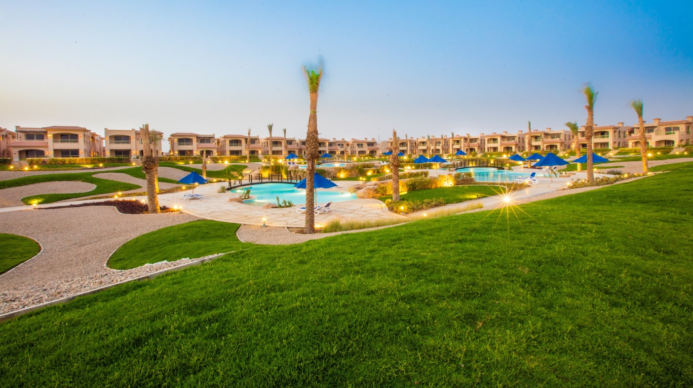

- Providing the ideal living environment: La Vista aims to offer a diverse range of residential projects that meet its clients' needs. The company pays great attention to designing residential projects with the highest standards of quality and comfort, providing residents with a suitable and relaxing living environment.
- Sustainable development: La Vista ensures that all its projects are implemented sustainably according to the best environmental and social practices. Thus, the company works to preserve natural resources and minimize the negative environmental impact of real estate projects.
- TExcellence and quality: La Vista is a symbol of quality and excellence in the real estate sector. The company is keen to work with the highest standards in executing its projects, which undergo rigorous quality control processes to ensure providing high quality and reliable products to clients.
- Achieving social interaction: La Vista cares about implementing projects that contribute to the development of the local community. The company works to provide job opportunities for locals and supports community and educational initiatives in the communities where it operates.
- Customer satisfaction: Customer satisfaction is one of the main objectives of La Vista Real Estate Development. The company is keen to meet customer needs and provide excellent after-sales services, with the goal of building long-term, profitable relationships with clients.
La Vista Real Estate Development Company


